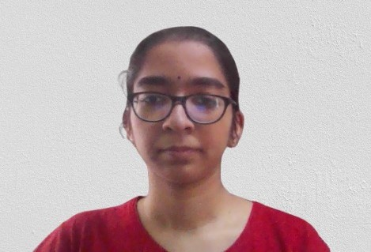
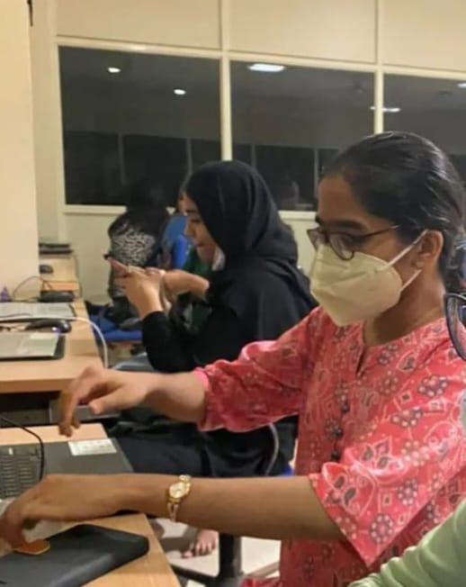
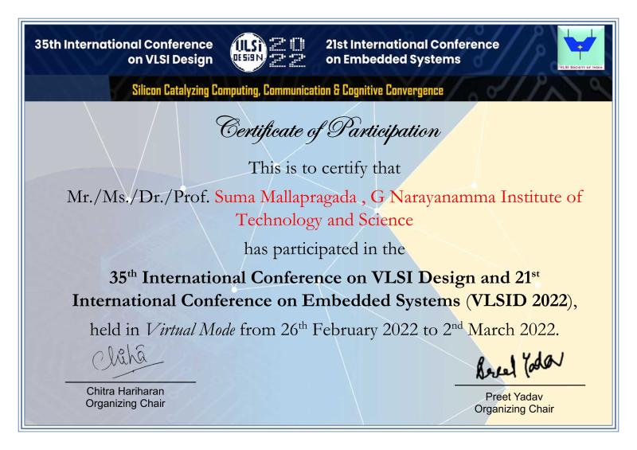
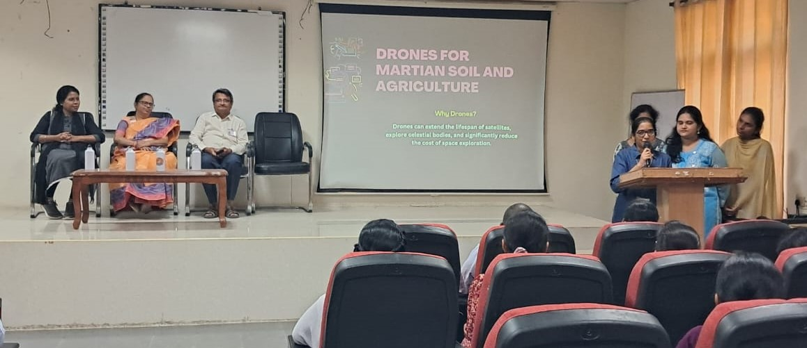

Home
Welcome! We don't just create; we write the future, blending the introspection of personal stories with the boldness of new possibilities.

I am a researcher, technologist, and innovator with a passion for AI, quantum computing, and space science.
My journey in STEM is shaped by a deep curiosity and a desire to explore the unknown, driven by the belief that everything in the universe, from knowledge to actions, forms a greater, interconnected whole. This idea of coalition fuels my work and pushes me to seek solutions that not only solve immediate problems but also contribute to a more sustainable and impactful future.
My work spans across projects in quantum computing, machine learning, data science, and space exploration. Whether working with Celeste GNITS, contributing to NASA Open Science, or collaborating with various IEEE communities, I always strive for excellence and meaningful innovation. I am motivated by the potential to push boundaries and create solutions that have lasting impact.
Beyond my technical work, I find inspiration in the music of Alec Benjamin, whose introspective lyrics resonate with my own journey of growth and self-reflection. Just as his songs explore complex emotions and personal evolution, my work in technology is about embracing challenges, expanding knowledge, and fostering innovation.
Passionate about technology, innovation, and research, I focus on projects that go beyond immediate results, aiming for long-term growth and interconnected solutions.
Each project I undertake is an opportunity to build stable, collaborative relationships and contribute to progress. The road ahead is one of discovery, and I’m excited to see where it takes me.
About Me
I am a Computer Science and Engineering graduate from G.Narayanamma Institute of Technology and Science (GNITS), Hyderabad.(2020–2024). My interests span across Science, Computer Science, Nanotechnology, Artificial Intelligence, and Quantum Computing.
I work as a Mainframe DB2 Developer at Bank of America Continuum India.
Former, Research Intern at IEEE Nanotechnology Council Young Professionals Region 10.
Pro-bono, I serve as an advisor at Celeste GNITS, where I provide strategic guidance and mentorship.

Driven by curiosity, I participate in Kaggle competitions. So far, I explored diverse topics such as text data and AI, contrail detection to mitigate carbon emissions, AI compiler optimization, utilizing Data Science and Statistics to assess the probability of detecting Continuous Gravitational Waves from LIGO data and employing Machine Learning to track Neutrinos using data from IceCube's detectors in Antarctica.
I was selected to be the co-team lead for Cluster Deneb in the prestigious IEEE R10's CLAP-2021, where I delivered a notable booth presentation on "Risk Avoidance." This opportunity marked the start of my international exposure, as it involved collaborating with diverse, global teams on professional tasks.During the NASA Space Apps Hackathon, I created the "Space Socks" game, a project that has become a cornerstone in fostering quantum computing initiatives at my college. I have since mentored students from Celeste GNITS in advancing this innovative concept.
My enthusiasm for technology led me to be a mentee in Microsoft's Intern Engage 2022, where I worked on a car data analytics project using Python libraries and Anvil-based Google Colab web hosting. I was a delegate of Google's Next'22, earning the Best of Next'22 Badge for my engagement with product updates, solutions, and technologies across the Asia-Pacific Region. This session provided valuable insights into Google Cloud's offerings for building, analyzing, designing, modernizing, operating, and securing applications.
In addition, I attended IEEE webinars on diverse topics such as geospatial engineering, image processing, stochastic learning, fluid dynamics, 5G network, quantum communication, patenting and IPR, and computer science standards.
I received a fellowship from VLSID to attend the 35th International Conference on VLSI Design through the Design Contest, showcasing designs on FPGA and industry platforms in Space Science and Healthcare.

My willingness to learn and grow through hands-on learning, analysis, and peer review makes me pursue workshops and courses reflecting the same. I took part in a workshop on HPC for Astronomy and Astrophysics offered by CCDS, IIT Kharagpur.I obtained certifications from the University of Helsinki in Elements of AI (Mar 2022), from Kaggle in Python for Geospatial Analytics (Apr 2022) and Reinforcement Learning (Jul 2022), and from IIT Madras via NPTEL in Algorithms and Data Structures using Python (March 2021) to deepen my knowledge and skills in areas critical to my development.
As a student activity volunteer with IEEE NTC Hyderabad, I played a pivotal role in hosting and scripting radio shows focused on advanced topics such as quantum computing for nanomedicines and neuromorphic computing. My efforts are directed towards promoting engagement and enthusiasm in nanotechnology,computing, electronics, and related fields.
I received an acknowledgment for my participation in ViksitBharat@2047. This initiative, aimed at fostering citizen participation in national development through vision and suggestions across five major sectors, highlights best practices for open learning and sustainable development in India. I contributed thoughts on Innovation, Science & Technology and hope India continues to draw inspiration from its ancient pioneers to shape humanity.
I was honored to receive the Best Student Award for the 2020-2024 academic year from CSI GNITS at G. Narayanamma Institute of Technology and Science (GNITS). This recognition highlighted my efforts in founding Celeste GNITS and my dedication to researching and introducing innovative concepts such as space science, the metaverse, and nanorobotics to my fellow students.

Beyond my professional roles, I am an explorer and writer, delving into Statistics, Research, Machine Learning, Neural Networks, Math, Physics, Chemistry, Nanotechnology, and Consciousness, contributing primarily on Quora and Celeste GNITS's Newsletter,Celeste GNITS Lab Notes on Linkedin.
I write poems and short stories in my free time.I have been penning my autobiography, "Mirror of Facts when I am Ill: When want to be Outstanding turns into Understanding", since 2023.